Before you begin
Both web parts are added to SharePoint once, by the right people. Find your row below.
- IT or a SharePoint admin · onceAdd the app to SharePoint.Upload the app file (
.sppkg) to the App Catalog and click Deploy. There is nothing else to approve: no app registration and no extra permissions. - Site owner · once per siteAdd it to your site.On your site, open the gear menu ⚙ and choose Add an app, then pick Work Boards (or File Type Analyser).
- Site owner · once per sitePut it on a page.Create a page, choose a full-width section, click +, add the web part and click Publish. Add the page to the site's menu so people can find it.
- EveryoneOpen the page and start.The rest of this guide is about using it.
Work Boards
A shared to-do list for a project or a team, with owners, status colours and dates, much like monday.com, but inside SharePoint.
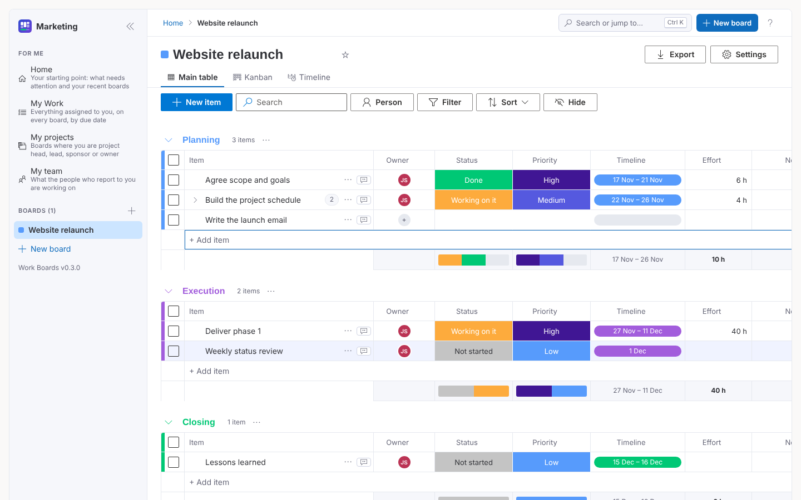
Words you'll see
First-time setup (site owners only)
- Open the Work Boards page.The first time, you'll see Set up Work Boards.
- Click Set up.It takes under a minute and creates a few hidden lists that store boards and settings.
- That's it.Everyone with access to the site can now use Work Boards. If an update ever needs your help, the same screen shows an Update now button.
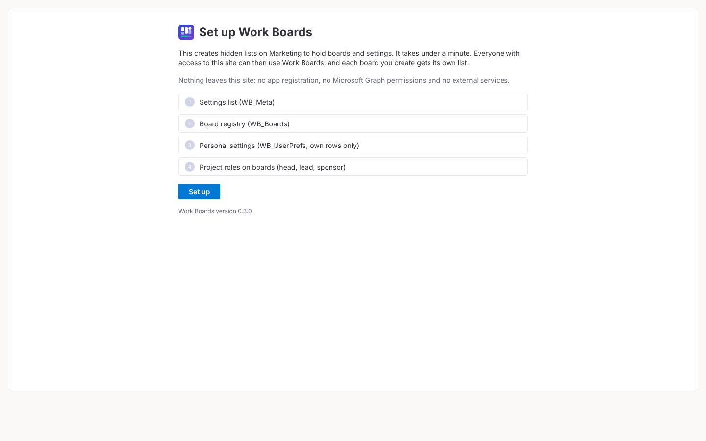
Finding your way around
Every screen has the same frame, so once you know these five places, you can't get lost.
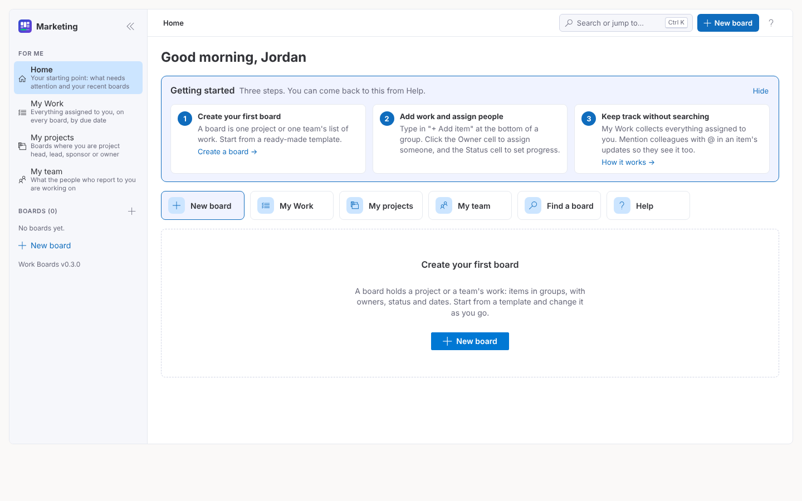
- 1The left menu. At the top, pages that are about you: Home, My Work, My projects and My team. Each one has a one-line description. Below are all the boards. Click « to make the menu narrow. On a phone, tap ☰ to open it.
- 2You are here. A trail like Home › Marketing › Website relaunch. Click any part of it to step back.
- 3Search or jump to. Click it (or press Ctrl + K), type a few letters of a board or page, and press Enter. This is the quickest way around.
- 4New board. Always in the same place, on every page.
- 5Help (?). Short how-to steps and the keyboard shortcuts, without leaving the page.
- 6Getting started. Three steps for your first visit. Click Hide when you're done. Help can bring them back.
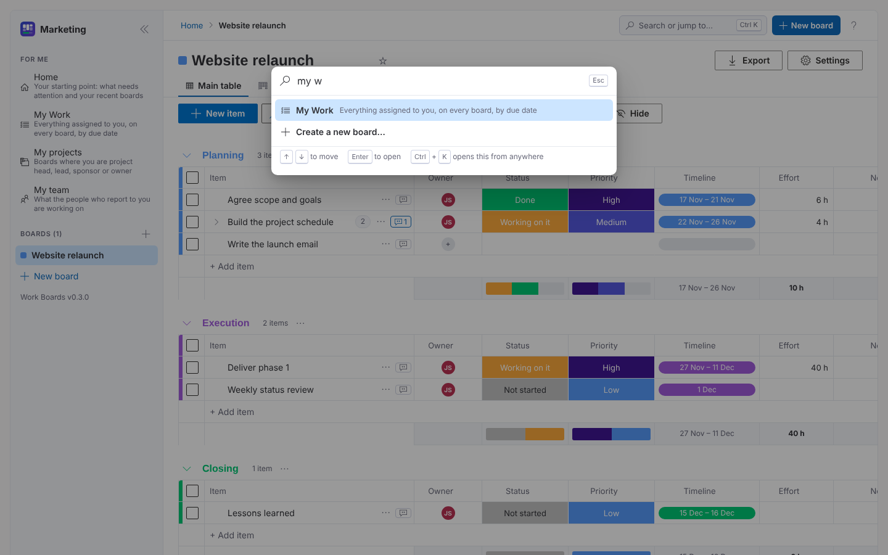
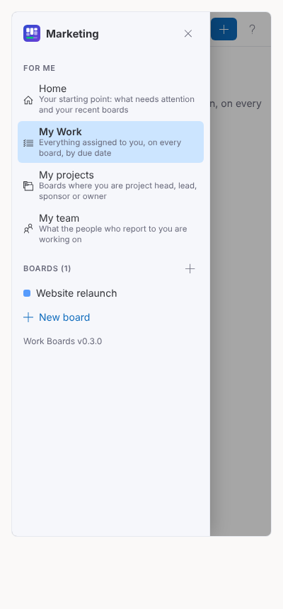
Everyday tasks
Open the one you need. Each is a few short steps.
Create a board
- Click + New board at the top right.
- Pick a starting point: Project plan, Team tasks, Team requests or Blank board. You can change everything later.
- Type a Board name. The other boxes are optional.
- Choose who can see it: Everyone on this site, or Only people I choose (site owners only).
- Click Create board. Tick Add a few example items first if you'd like something to try things out on.
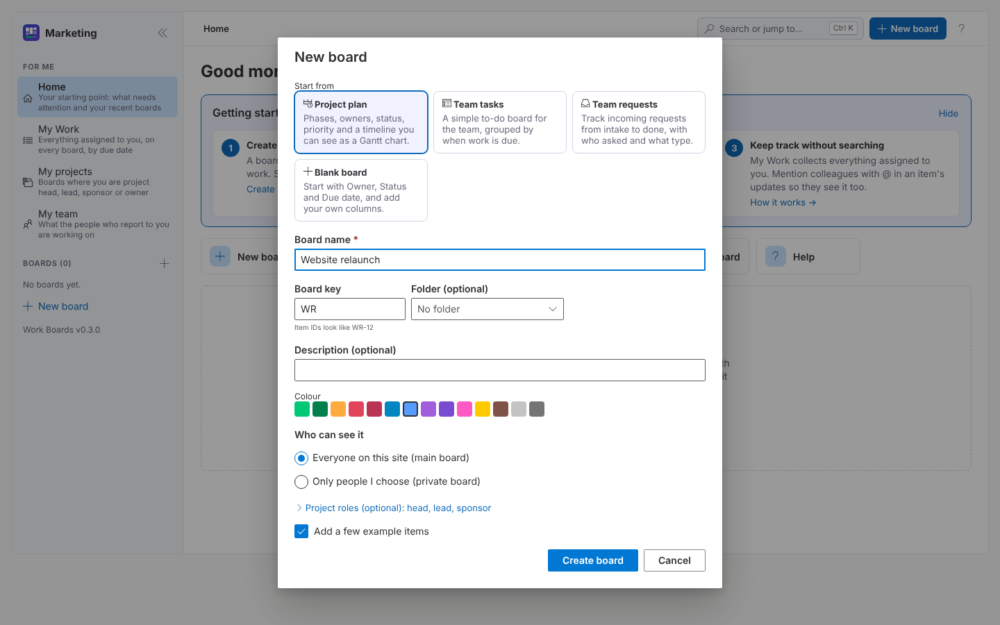
Add an item and fill in its details
- At the bottom of a group, click + Add item, type a name and press Enter.
- Assign someone: click the round Owner cell and type a name.
- Show progress: click the Status cell and pick a colour, such as Working on it.
- Set dates: click the Timeline or Due date cell and pick days on the calendar.
- Everything saves by itself. There is no Save button.
Open an item, post an update, mention someone
- Click the speech bubble at the end of an item's name. A panel opens on the right.
- The top shows all of the item's details. You can change them here too.
- In Updates, type a message. Type @ and the start of a name to mention a colleague, then pick them from the list.
- Click Update (or press Ctrl + Enter). Others can reply and like it.
- Activity shows the history: who changed what, from what, to what.
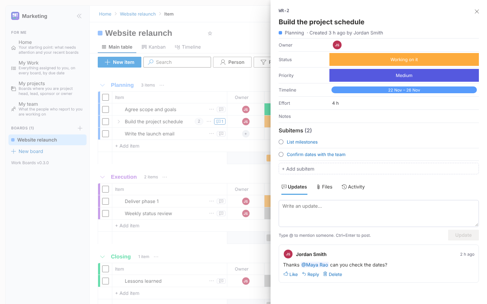
Add files: upload, or link a file from a library
- Open the item and choose the Files tab.
- To upload a copy: drag files onto the dashed box, or click browse.
- To link a file that already lives in SharePoint (recommended, so there's only one copy): click Link a file.
- In Browse this site, open a library and folder, tick the files, and click Link.
- For a file elsewhere (another site, OneDrive or Teams), use Paste a link: in SharePoint, use Copy link on the file, then paste it here.
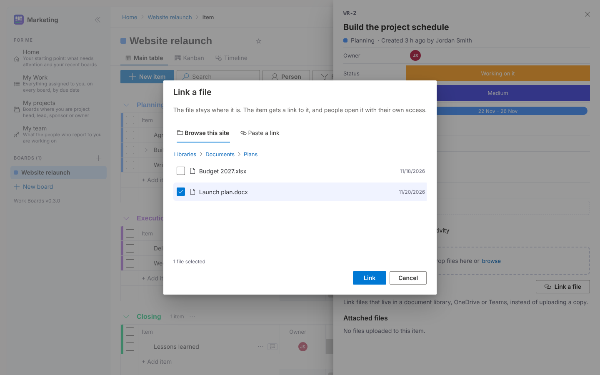
Move, reorder or tidy items
- Reorder: drag an item by its name and drop it where you want it.
- Move to another group: drag it there, or click ⋯ › Move to group.
- Do several at once: tick the boxes on the left. A bar appears at the bottom to move or delete them together.
- Add or rename a group: click + Add new group, or click a group's name to rename it. Its ⋯ menu changes the colour or the order.
Add, rename or change columns
- Click + at the right end of the column titles and pick a type: Status, People, Timeline, Date, Text, Numbers, Dropdown, Checkbox or Link.
- Under Project roles you'll find ready-made Project lead, Project head and Project sponsor people columns.
- Point at a column title and click its small ▾ to rename, sort, hide, move or delete it.
- For Status and Dropdown columns, choose Edit labels to change the words and colours. Items using a renamed label update by themselves.
Find just what you need: search, filter, sort
- Search finds items by any word in them.
- Person shows only one person's items.
- Filter narrows by status, by dropdown option, or by date (Overdue, Due in the next 7 days, No date).
- Sort orders by any column. Hide tucks away columns you don't need.
- Clear all brings everything back. Your choices are remembered on your own computer.
Board settings: owners, project roles, privacy
- On a board, click Settings at the top right.
- General: name, description, folder, colour and board owners (the people who can change columns and settings).
- Project roles: optionally pick a Project head, Project lead and Project sponsor. They see the board under My projects, and their names show under the board title.
- Access: make a board private, and choose who can see it (site owners only).
- Archive or delete: archive hides a finished board without deleting it. Delete sends it to the site's recycle bin.
Keep favourite boards at the top, and export to Excel
- Click the ☆ star next to a board's name. It appears under Favourites in the left menu.
- Click Export on a board to download it as a file that opens in Excel.
Three ways to look at the same work
Use the tabs under the board's name. They show the same items, so a change in one shows in all three.
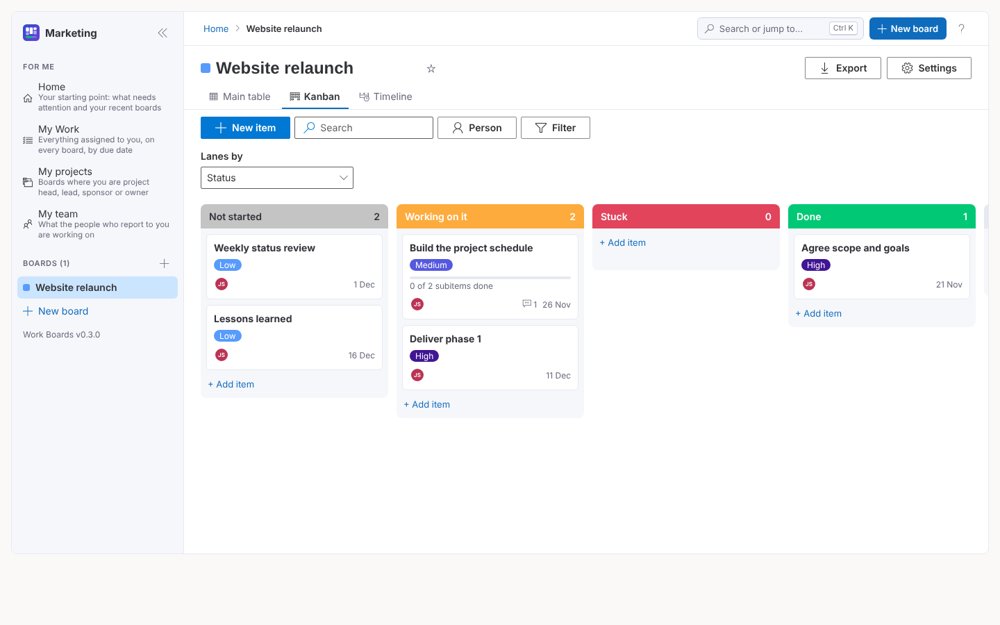
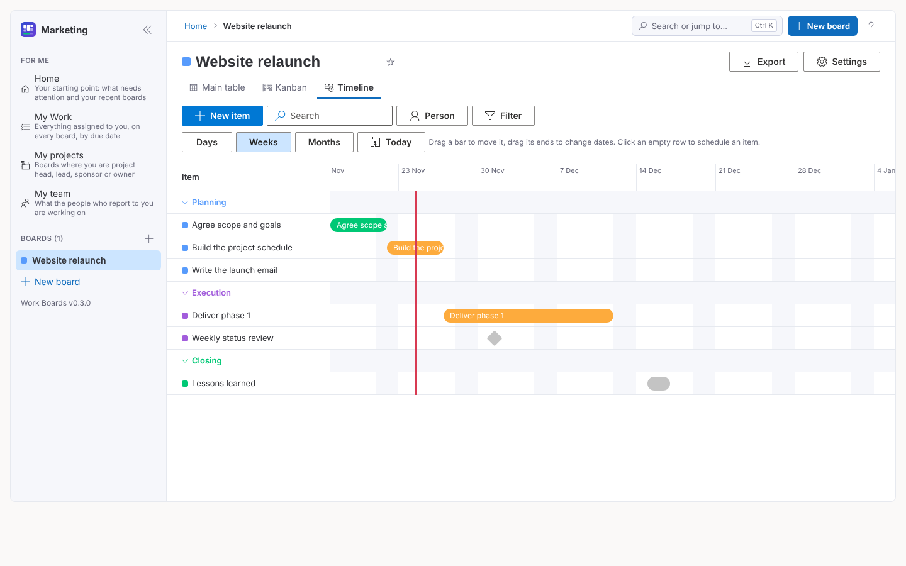
My Work, My projects and My team
Three pages in the left menu that gather things from every board for you, so you never have to hunt.
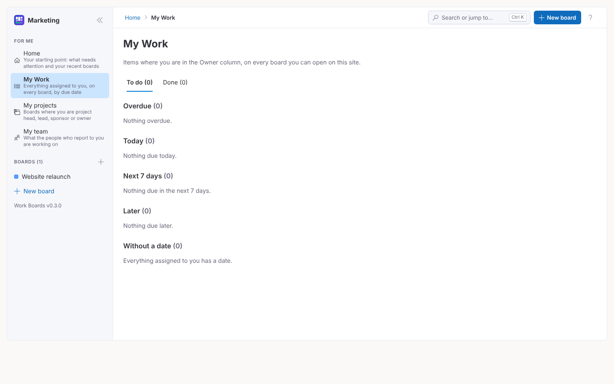
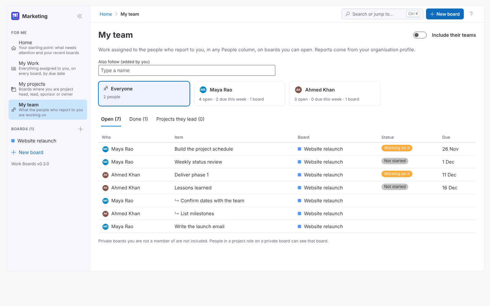
Keyboard shortcuts
| Ctrl + K | Search or jump to any board or page (⌘ + K on a Mac) |
| ? | Open help |
| Enter | Save what you typed in a cell, or add the item you typed |
| Esc | Cancel typing, or close a window or panel |
| Ctrl + Enter | Post an update |
| ↑ ↓ | Move through search results and @mention suggestions |
Questions and fixes
It says "Work Boards isn't set up on this site yet".
A site owner needs to open the page once and click Set up. If it says an update is needed, they click Update now.
I can see a board but can't change anything.
You have read-only access to it. A note at the top of the board says so. Ask a board owner or site owner for edit access.
I deleted something by mistake.
Items, files and boards go to the site's recycle bin. A site owner can restore them from Site contents › Recycle bin.
Someone else changed the same item at the same time.
Both changes are kept, and you'll see a short message. Other people's changes appear on your screen within about 20 seconds.
My team is empty.
It uses the reporting lines in your organisation's directory. If those aren't filled in, add people yourself under Also follow.
"Link a file" says linked files aren't turned on for this board.
Boards made before this feature existed need a board owner to link one file. That turns it on for everyone on that board.
Something else went wrong.
Note the message in the red box, and the version shown at the bottom of the left menu, and send both to whoever looks after your SharePoint.
File Type Analyser
Answers a simple question: what is this SharePoint site full of? It counts every file by type, such as PDF, Word, Excel or pictures, and shows it as an easy dashboard.
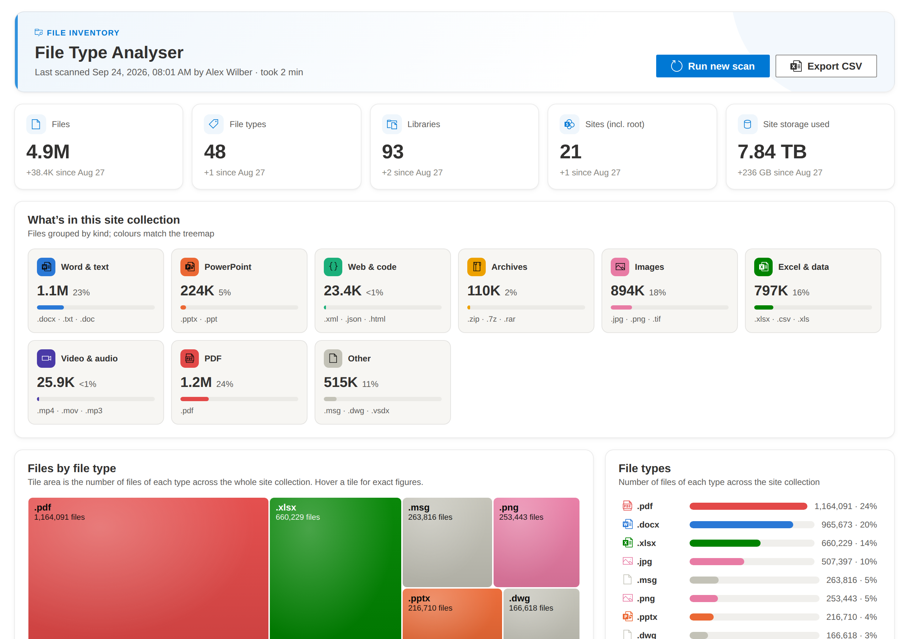
Running your first scan
- Site ownerOpen the page with File Type Analyser on it.Before the first scan it is empty, with a Start scan button.
- Site ownerClick Start scan.You'll see a tree of the site's subsites and libraries fill in as it goes. You can keep reading while it works.
- Site ownerWait for it to finish.Usually a few minutes. Cancel stops it and brings the previous results back.
- EveryoneOpen the page any time.The saved dashboard appears straight away, with when the scan was run and by whom. Run Run new scan again later to see what changed.
Reading the dashboard
- Headline figures (the top row).Total files, how many file types, libraries and sites, and the site storage used. Under each is the change since the previous scan, for example "+38.4K since Aug 27".
- What's in this site collection.One card per kind of file: Word & text, PowerPoint, Excel & data, PDF, Images, Video & audio, Archives, Web & code, Other. Each shows how many files and what share of the total.
- Files by file type (the big coloured blocks).The bigger the block, the more files of that type. The colours match the cards above. Point at a block to see the exact number.
- File types list.Every file type with its exact count, biggest first. Click Show all for the full list.
- Site tree.Each subsite and library, with how many files it holds and a small bar of its mix of file kinds. Open it to find out where files are.
- Export CSV.Downloads every number as a spreadsheet: one row per site, library and file type.
Questions and fixes
I don't see a Start scan button.
Only site owners and site collection admins can run a scan. Everyone else sees the last saved results.
A file I just uploaded isn't counted.
The counts come from SharePoint search, which can take a short while to pick up new files. It will appear in the next scan.
Why is storage shown only for the whole site, not per file type?
Much of a site's storage is old versions of files, which search doesn't count. A per-type storage figure would be misleading, so the dashboard shows SharePoint's own total instead.
A subsite shows an error in the tree.
The person who ran the scan couldn't open that subsite. The rest of the scan carries on. Run it as a site collection admin to include it.
Can people see the names of my files?
No. The saved results contain only library names and counts, never file names or contents.